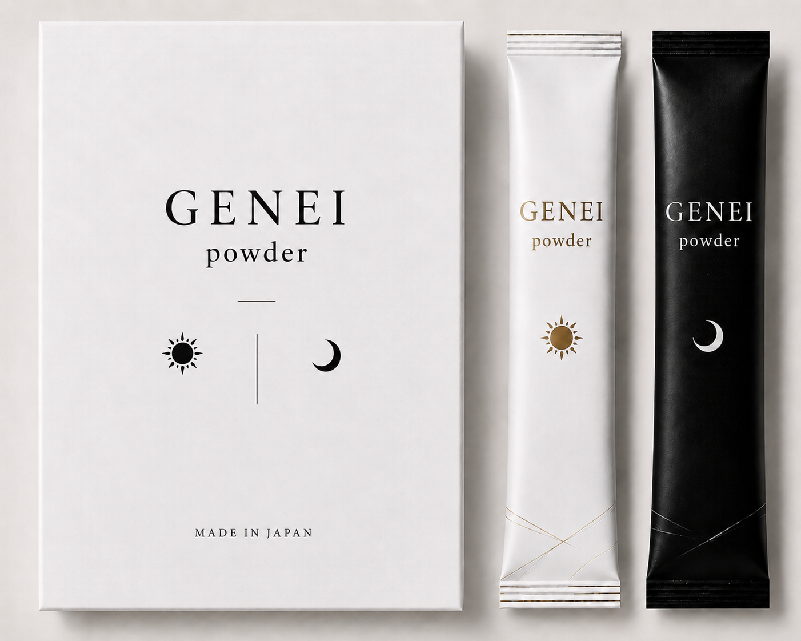

Flagship Brand

はじめよう。
玄は「奥深い・見えない基盤」、盈は「満ちる・巡る」。
GENEIは、からだの内側にある自己調整力——「ボディOS」を整えるブランドです。
現代は、睡眠不足・慢性ストレス・栄養の偏りによって、
からだの基本システムが乱れています。
サプリメントを「足す」のではなく、
本来の働きを「取り戻す」ことを設計思想としています。
シルクペプチドを核に、医師の視点で成分バランスを設計。
日常のルーティーンに静かに溶け込む、
次世代のデイリーウェルネスブランドです。
成分の多さではなく、からだの自己調整力を引き出すバランス設計。ボディOSを取り戻すことを目的としています。
150年の蚕糸の知見から生まれた高純度シルクペプチドを中心成分に。吸収率が高く、からだの内側から働きかけます。
産婦人科専門医・医学博士・臨床遺伝カウンセラーである小杉好紀医師の監修のもと設計。数値より体感を重視した処方を追求します。
「朝用（MORNING FIRE）」と「夜用（NIGHT REPAIR）」を組み合わせることで、昼夜のリズムに沿った相乗効果を生み出す。この組み合わせ設計こそが、GENEIの最大の差別化ポイントです。
朝と夜、それぞれのリズムに合わせた2つのフォーミュラ。どちらか一方でも機能しますが、組み合わせることで本来の相乗効果が生まれます。

朝の代謝を目覚めさせ、細胞エネルギーの生産を高める朝用フォーミュラ。 シルクペプチドを軸に、ミトコンドリア活性を支える成分を配合。 毎朝の習慣として、一日の基盤をつくります。
睡眠中の細胞修復・再生をサポートする夜用フォーミュラ。 深い睡眠とともに、からだの内側が静かに整っていく設計。 朝用（MORNING FIRE）と組み合わせることで、24時間の継続的なケアが完成します。
小杉 好紀 医師
Dr. Yoshinori Kosugi, MD, PhD
産婦人科専門医・医学博士・臨床遺伝カウンセラー・統合医療家。
不妊治療と統合医療に長年従事し、「からだの根本的な状態を整えることが健康の基盤」という思想のもと、GENEIの処方設計を共同設計。
産婦人科専門医
医学博士
臨床遺伝カウンセラー
統合医療家（エピゲノム医療・オートファジー医療）
著書：『50才で赤ちゃんを！』『卵子はよみがえる』他
「年齢だけで諦めない。
からだの根本的な状態を整えることが、
本当の健康の基盤である。」
卵子の質・ホルモンバランス・子宮環境を総合的にサポートする妊活特化フォーミュラ。産婦人科医師監修・近日公開予定。
日々の疲労・睡眠・肌コンディションなど、現代の悪循環を断ち切るためのベーシックケアライン。
海外向けに設計された和のウェルネス体験。日本の伝統食材とシルクを組み合わせた国際展開プロダクト。